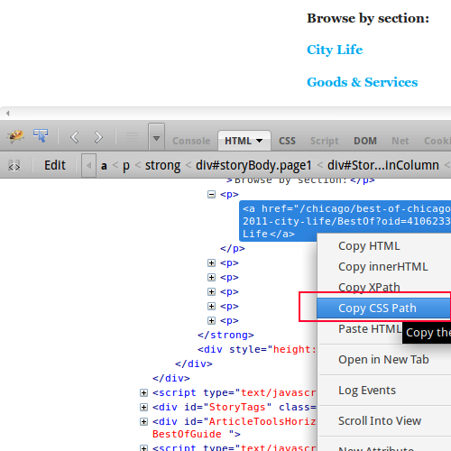
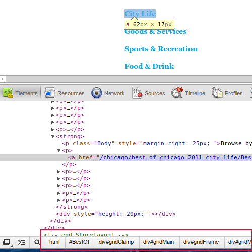

This post is inspired by an excellent post called Web Scraping 101 with Python. It is a great intro to web scraping to Python, but I noticed two problems with it:
- It was slightly cumbersome to select elements
- It could be done easier
If you ask me, I would write such scraping scripts using an interactive interpreter like IPython and by using the simpler CSS selector syntax.
Let’s see how to create such throwaway scripts. For serious web scraping, Scrapy is a more complete solution when you need to perform repeated scraping or something more complex.
The Problem
We are going to solve the same problem mentioned in the first link. We are interested in knowing the winners of Chicago Reader’s Best of 2011. Unfortunately the Chicago Reader page shows only the five sections. Each of these sections contain award categories e.g. ‘Best vintage store’ in ‘Goods & Services’. Within each of these award category pages you will find the winner and runner up. Our mission is to collect the names of winners and runner ups for every award and present them as one simple list.
The Setup
Start python, IPython, bpython or any other interactive python interpreter of your choice. I shall be using IPython for the rest of this article.
A common starting point for most web parsing needs is getting a parsed web page from a URL. So let’s define our get_page function as follows:
from urllib2 import urlopen from lxml.html import fromstring def get_page(url): html = urlopen(url).read() dom = fromstring(html) dom.make_links_absolute(url) return dom
Within the get_page function, the first line downloads the page using urlopen function and returns it’s contents in the form of a string. The second line uses lxml to parse the string and returns the object representation of the page.
Since, most links in the html page will be relative pages we will convert them to absolute links. For e.g. a link like /about will be converted into http://www.chicagoreader.com/about. This makes it easy to call get_page function on such URLs later.
Selecting Page Elements
Next we need to invoke this function and select parts of the document. But before that we need to know which parts we need.
I prefer using CSS selector syntax compared to XPaths for selecting nodes. For examplem, the path to the same element in these two different syntax are shown below:
-
CSS Path: html body#BestOf.BestOfGuide div#gridClamp div#gridMain div#gridFrame div#gridMainColumn div#StoryLayout.MainColumn div#storyBody.page1 strong p a
-
XPath: /html/body/div[3]/div[2]/div/div[2]/div[5]/div/strong/p[2]/a
CSS paths might be longer but are easier to understand. More importantly, they are easier to construct.
On Firefox, you can use Firebug to right click on any page element to get it’s CSS path.

On Chrome, you will not be able to copy the CSS path but you can see it displayed on the status bar at the bottom

Selector Gadget
These CSS paths are extremely long and I wouldn’t recommend using them. They are too specific and tied to the overall document structure, which might change. Moreover, you can shorten a CSS selector path without affecting it’s specificity.
I recommend using a bookmarklet called Selector Gadget which elegantly solves both these problems. It also works across browsers.
First drag the bookmarklet to your bookmark toolbar. Open any page and click on the Selector Gadget to activate it. Now click on the element for which you want the CSS selector. Once you click an element, it will turn yellow and the CSS selector will appear in the gadget. Many other elements matching that selector will be also shown in yellow.
Sometimes, elements which you do not require are also matched. To eliminate that, click on an element you DO NOT want to match. Continue this process of selection and rejection till you get the exact CSS selector you want. Click on the ‘Help’ button for instructions.
Using iPython
Start your iPython interpreter and paste the lines of code, we saw previously:
$ ipython Python 2.7.3 (default, Sep 26 2012, 21:51:14) Type "copyright", "credits" or "license" for more information. IPython 0.13.1.rc2 -- An enhanced Interactive Python. ? -> Introduction and overview of IPython's features. %quickref -> Quick reference. help -> Python's own help system. object? -> Details about 'object', use 'object??' for extra details. In [1]: from urllib2 import urlopen In [2]: from lxml.html import fromstring In [3]: def get_page(url): ...: html = urlopen(url).read() ...: dom = fromstring(html) ...: dom.make_links_absolute(url) ...: return dom ...: In [4]: dom = get_page("http://www.chicagoreader.com/chicago/best-of-chicago-2011/BestOf?oid=4100483")
In the last line, you retrieve the initial page you would like to be scraped and assign its parsed DOM object into dom.
In the next three commands, cssselect function is invoked with the CSS selector “#storyBody p a” to get all the section links. The result is a list. Since we need just the URLs, we run a list comprehension across the list of links.
In [5]: dom.cssselect("#storyBody p a") Out[5]: [<Element a at 0x336ae90>, <Element a at 0x336afb0>, <Element a at 0x336c2f0>, <Element a at 0x336c3b0>, <Element a at 0x336c170>, <Element a at 0x336c350>] In [6]: [link.attrib['href'] for link in _] Out[6]: ['http://www.chicagoreader.com/chicago/best-of-chicago-2011-city-life/BestOf?oid=4106233', 'http://www.chicagoreader.com/chicago/best-of-chicago-2011-goods-and-services/BestOf?oid=4106022', 'http://www.chicagoreader.com/chicago/best-of-chicago-2011-sports-recreation/BestOf?oid=4106226', 'http://www.chicagoreader.com/chicago/best-of-chicago-2011-food-drink/BestOf?oid=4106228', 'http://www.chicagoreader.com/chicago/best-of-chicago-2011-arts-culture/BestOf?oid=4106230', 'http://www.chicagoreader.com/chicago/best-of-chicago-2011-music-nightlife/BestOf?oid=4106223'] In [7]: secns = _
Note that we are using the underscore ‘_’ symbol to refer to the result of the previous command. With this tip, we can avoid inventing names for temporary results. Also whenever we get a result worth keeping, we can name them in hindsight.
Finding all categories
Next we need to retrieve and parse each section page. It can be easily done with the following list comprehension. The second command is a nested list comprehension with two loops. As before, we just need the urls. All 389 of them, each representing an award category.
In [13]: doms = [get_page(secn) for secn in secns] In [14]: [link.attrib['href'] for dom in doms for link in dom.cssselect("#storyBody a")] Out[14]: In [15]: categs=_ In [16]: len(categs) Out[16]: 389
Finding the title, winner and runner-up
Next, open any url from the categs list and find CSS selectors for our items of interest. These three items are: award category title, winner and runner-up. Since cssselect function returns a list (even if only one match is found) we need to extract the 0-th element. Another function called text_content is applied to get just the information we are looking for.
In [17]: categ = categs[0] In [18]: dom=get_page(categ) In [19]: dom.cssselect("h1.headline")[0].text_content() Out[19]: u'Best longtime cause worth fighting for\xa0' In [20]: dom.cssselect(".boc1")[0].text_content() Out[20]: 'Public school reform' In [21]: dom.cssselect(".boc2")[0].text_content() Out[21]: 'Recycling in Chicago'
Named Tuples - Ideal data structures for scraped input
Earlier, tuples were used for storing scrapped results. They use less memory compared to dictionaries. Recently, Python has support for named tuples which are much clearer to use and just as memory efficient.
The next few commands loops through all the award categories and adds a named tuple for each. To avoid fetching too many pages, I have truncated the list to only the first two items.
In [22]: from collections import namedtuple In [23]: Award = namedtuple("Award", "title, winner, runnerup") In [24]: awards = [] In [25]: for categ in categs[:2]: dom=get_page(categ) title = dom.cssselect("h1.headline")[0].text_content() winner = dom.cssselect(".boc1")[0].text_content() runnerup = dom.cssselect(".boc2")[0].text_content() a = Award(title=title, winner=winner, runnerup=runnerup) awards.append(a) In [36]: awards Out[36]: [Award(title=u'Best longtime cause worth fighting for\xa0', winner='Public school reform', runnerup='Recycling in Chicago'), Award(title=u'Best historic building\xa0', winner='Chicago Cultural Center', runnerup='The Rookery')]
Power of Interactivity
For one-time scraping scripts, it is often best to use just the Python interpreter. I have tried to walk you through how I would attack the problem of scraping a set of web pages. Hope you found it useful!

Comments